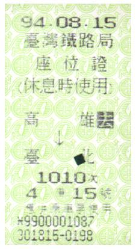

在完成本書之前，意外翻出了這張車票，94.08.15從高雄到台北的座位證！一時之間還想不起這張座位證是哪裡來的，反倒是我老婆提醒了我，不過我卻想起更久之前的事情…
大學時代參加的社團是社會服務團，寒、暑假時會到一些地方舉辦營隊，在學期中，即將參與營隊的隊友們，必須負責各自的課程、準備教材、設計教具、驗收教案等，出營隊時則上台實行課程。
除了社團之外，自己平常也愛寫些有的沒的。大學時代正值WWW興起之時，自己學會如何寫HTML，也常將學電腦時的心得寫下來放到Web，像是如何安裝Apache、CGI留言版之類的，說來寫作的習慣，應該是從那時養成的。
在大學最後一年考完研究所之後，在BBS的Job版上回應了幾個短期打工需求，有天接到一通電話，問我想不想寫書。雖然主題只是網頁製作，但第一次要寫完整的一本書，合約載明頁數必須有400頁以上，著實是個很大的壓力，甚至還因此失眠了好幾次，所幸在當兵前夕完成了這本書，成了我的第一本著作。事後在市面上發現，這本書還有四刷，心裡還蠻感到安慰的。
當兵期間所屬單位是學校，平時除了連隊勤務或衛哨之外，所作的事就是協助教官編寫教材、教案、上課擔任助教等。退伍後第一份工作是在高雄，公司業務之一是出版電腦圖書，因為早有寫作及出版圖書經驗，自然也在公司的名義之下寫作了幾本書。
2003年3月底左右，開始將一些東西以「良葛格學習筆記」放在網路上，隨著時間累積，伴隨著網路傳播的力量，越來越多人知道這個網站的存在，也因此在網路上結交了許多朋友，並得以在Javaworld@TW前站長林上傑（Browser）先生的介紹下，認識了碁峰編輯江佳慧（Novia）小姐，出版了第二本有個人名號在上頭的書籍。
想到這邊…發現我過去的經驗中，怎麼都跟上台、寫作、課程有關？還有一點不知道是否也有相關，我岳父岳母也都是老師…
這就是看到94.08.15從高雄到台北的座位證時，突然一連串湧出的回憶…XD
94.08.15是什麼日子？隔兩天就是「2005 Java TWO社群大會」！這張車票是為了上去參加Java TWO大會而買的。這是我第一次參加Java TWO大會，目的之一，是為了想看看許多網路上認識但未曾謀面的朋友，另一個原因是碁峰有在大會設攤，當中有賣我的書，想去看看反應如何…在大會上，碰到了王森（Moli）先生，他跟我說：「想要請你幫忙寫個教材…」，不過那時場面很混亂，反正就是一堆人哈啦來哈啦去，話題很難繼續，直到後來出現了個Moli想加我MSN，哈啦過後，才確定這件事是真的！
之後又因為一連串因緣際會，開始了我江湖賣藝…呃…講課的日子！時光匆匆、歲月如梭…轉眼來到了2009年3月左右，Novia問我有沒有新的寫作計畫？我想了一下，這些日子以來，許許多多的授課經驗，累積了不少的想法，也了解了不少學員在實際學習時會遇到的問題，不如寫下來吧！…而這些寫下來的東西，成了你眼前的這本書（篇幅有限的關係，這本書只針對Servlet／JSP）！
我不太知道人有沒有宿命，但回首時總會發現許多的巧合，過去的種種經驗，好像在為了將來的某個事件而準備似的。當然，你也可以說，這是因為回憶時選擇性地挑選拼湊而成。無論如何，這些事情過去總得發生過，未來的你才有得拼湊。
一張車票引發一連串回憶，也終於知道要怎麼寫這本書的序了，這本書就是這麼來的…
2009/5/26